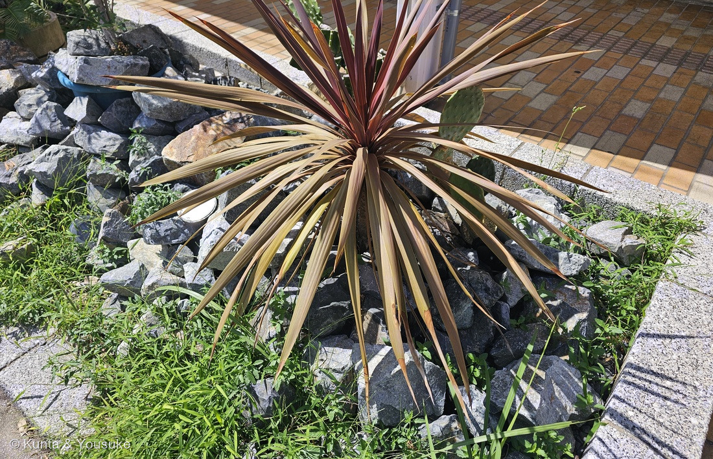
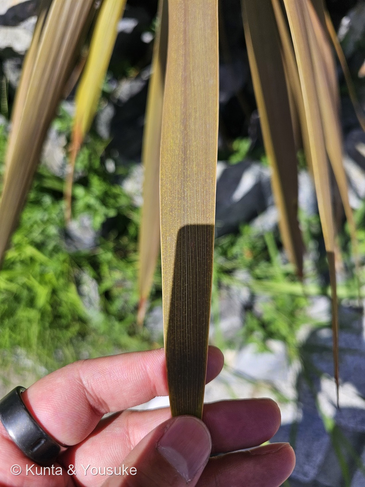
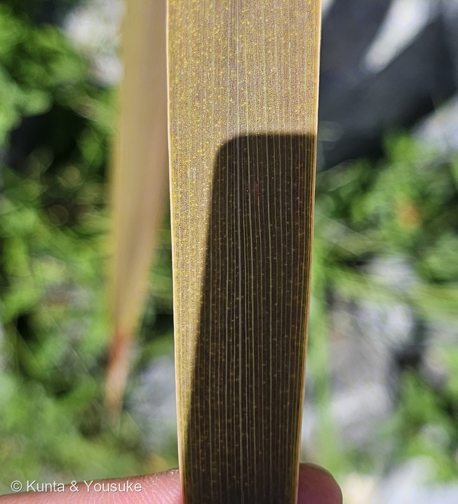

地図を読み込んでいるよ…
🔍 写真も地図も、押しているあいだ拡大して見られるよ（スマホは指を置いてすこし待ってね）。
🌍 の地図＝この子がもともと自生している場所を緑に。ニュージーランドの固有種。北島の北端から南島の南まで、ほぼ全土に自生する。日本では暖地で庭木・街路の植えこみとして屋外で冬を越す。くわしくは下の地図の説明を見てね。
⭐ニュージーランドの固有種＝北島の北端から南島の南まで自生する（英語版Wikipedia）。⭐この株は、日本の商店街の植えこみに植えられた園芸品種（赤葉）＝自然に生えたものではないよ。
⚠ 地図は国（日本と中国だけ県・省）までしか塗れないから、ほんとうの分布より広く見えていることがあるよ。地図はだいたいの場所。正確なところは、上の文を見てね。
ニオイシュロラン（匂棕櫚蘭）の赤葉の品種
Cordyline australis (G.Forst.) Hook.f.（⚠品種名は決めていない）
別名 · コルジリネ・オーストラリス／センネンボクラン／英名 cabbage tree（キャベツの木）／マオリ名 tī kōuka ⭐赤葉の子は「レッドスター」などの名で売られている
キジカクシ科 · Asparagaceae（ロマンドラ亜科 Lomandroideae · センネンボク属 Cordyline · キジカクシ目 Asparagales）── ⭐219 ハツミドリ・288 フキアゲ・141 トックリランと同じキジカクシ科／⭐⭐センネンボク属ははじめて（297 クロトンのおまけのセンネンボクと同じ属）
燻太さんの言葉「以前登録したフキアゲとか、ハツミドリに似た、ウニみたいな植物。でもこの子は葉っぱが赤色で剣みたい。平行脈と葉の色のコントラストがとっても素敵だね。」── ⭐「素敵」と言った平行脈が、そのまま名前の決め手だった
⭐⭐⭐⭐ 名前と学名の由来 ── 「こん棒」と「南の」
- ⭐⭐ 属名 Cordyline＝ギリシャ語 kordylē（こん棒）から＝土の中の太い根茎を指している（英語版Wikipedia）。
- ⭐⭐ 種小名 australis＝ラテン語で「南の」（英語版Wikipedia）＝南半球のニュージーランドの子。
- ⭐⭐⭐ はじめの名前は Dracaena australis＝クック船長の最初の航海（1769年）でバンクスとソランダーが採った標本を、ゲオルク・フォルスターが1786年にドラセナ属として発表し、1833年にエンドリッヒャーがセンネンボク属へ移した（英語版Wikipedia）＝⭐学名のうしろの「(G.Forst.) Hook.f.」のカッコが、その引っ越しのしるし。
- ⭐⭐ 和名「ニオイシュロラン」＝「花序がシュロに似ており、芳香があることに由来する」（日本語版Wikipedia）。
- ⭐⭐ 英名「cabbage tree（キャベツの木）」＝入植者が若い葉をキャベツの代わりにしたから、と言われる。⭐でも、それより前の1777年にフォルスターが「中心の芽は、アーモンドの実のような味で、少しキャベツの風味がある」と書いている（英語版Wikipedia）。
⭐⭐⭐ この植物のこと ── ニュージーランドの「キャベツの木」
- ⭐⭐ ニュージーランドの固有種で、北島の北端から南島の南まで自生する（英語版Wikipedia）。野生では高さ20mにもなる木（同）。
- ⭐⭐⭐ 花が咲くまでは、枝分かれしない1本の幹。最初の花のあとで枝分かれして、枝先に葉の房をつける（英語版Wikipedia）。⭐この株はまだ1本の幹＝まだ花を咲かせていないのかもしれない（⚠ぼくの読み）。
- ⭐⭐ 花は春〜初夏（4〜6月）。白い小さな花の大きな円錐花序で、甘い香りがあり、たくさんの虫を呼ぶ（三河・英語版Wikipedia）。
- ⭐⭐ マオリの人たちの暮らしの木＝若い芽の芯は生で、または煮て野菜として食べられ「kōuka」と呼ばれた／葉から取る繊維は強く、とくに海水の中で長持ちした。ニューサイランの繊維より強い（英語版Wikipedia）。⚠この株を食べてみてね、という話ではないよ（公共の植えこみの子だし、園芸品種だから）。
- ⭐ 寒さに強いほうで、イギリスではスコットランドの東海岸まで育ち、Torbay palm・Cornish palm と呼ばれる（英語版Wikipedia）。⭐日本でも暖地では屋外で冬を越す（三河）。
- ⭐ 赤葉は園芸品種の色＝'Red Star' は「暗い赤銅色の葉」（英語版Wikipedia）。もとの種の葉は緑。⚠この株の品種名は、名札が無いので決めない。
⚠ 同定について ── 中脈が無いこと、葉柄が無いこと、幹があること
⭐⭐⭐⭐⭐ 燻太さんの「フキアゲやハツミドリに似た、ウニみたいな植物」── 同じ科の、別の亜科
⭐⭐⭐⭐⭐ 燻太さんの「平行脈と葉の色のコントラスト」── それが決め手だった
- ⭐ 燻太さんの言葉＝「平行脈と葉の色のコントラストがとっても素敵だね。」
- ⭐⭐⭐⭐ 写真②③の葉には、まんなかに太い筋（中脈）が無い。同じ太さの細い脈が、等間隔にずらっと並んでいる。⭐指の影のところでは、脈と脈をつなぐ短い横すじまで見える。
- ⭐⭐⭐⭐ これが三河の記載そのまま＝「葉は長さ30〜100cm×幅3〜6cm、基部の上でわずかに狭くなるだけで、中脈は不明瞭、脈は細かい」。
- ⭐⭐⭐ そっくりなセンネンボク（C. fruticosa）とは、ここで分かれる＝センネンボクは葉が幅広くて葉柄がある（植物写真鑑「葉柄を持つ」／英語版Wikipedia「長さ30〜60cm、幅5〜10cm」）。⭐この子は葉柄が無く、細長い剣のまま幹につく。⭐297 クロトンのおまけに選んだ温室の赤紫の子は、このセンネンボクのつもり＝まだ「探したい」のまま。
⏳ 宿題 ── 5つ
- ⏳⭐⭐⭐ ①春〜初夏（4〜6月）に花が咲くか＝白い小さな花の大きな円錐花序と、甘い香り＝和名の「ニオイ」を確かめる。
- ⏳⭐⭐⭐ ②枝分かれ＝花が咲いたあとで枝分かれするか（この株はまだ1本の幹）。
- ⏳⭐⭐ ③幹の樹皮＝コルク質でスポンジのような手ざわり（英語版Wikipedia）＝そっと触れてみる。
- ⏳⭐ ④葉の表面の黄色い点々（写真③）が何なのか＝ぼくには分からない。
- ⏳⭐ ⑤おまけのニューサイラン＝幹があるか、株もとから扇に出るかを見くらべる。
参考：三河の植物観察「ニオイシュロラン」（Cordyline australis (G.Forst.) Hook.f.／キジカクシ科 Asparagaceae センネンボク属／別名センネンボクラン、アカドラセナ、コルディリネ・オーストラリス／英名 cabbage tree, giant dracena, grass palm／花期4〜6月／高さ12〜20m／外来種 ニュージーランド原産／葉は長さ30〜100㎝×幅3〜6㎝、基部の上でわずかに狭くなるだけで、中脈は不明瞭、脈は細かい。円錐花序は疎、長さ60〜150㎝。花は甘い芳香があり、白色／耐寒性があり、暖地では屋外で越冬する）／Wikipedia「ニオイシュロラン」（和名は花序がシュロに似ており、芳香があることに由来する）／Wikipedia (en) "Cordyline australis"（leaves 40–100 cm long and 3–7 cm wide at the base, with numerous parallel veins, indistinct midrib／Before it flowers, it has a slender unbranched stem. After the first flowering, it divides to form a much-branched crown／named Dracaena australis by Georg Forster (1786)… In 1833, Stephan Endlicher reassigned the species to the genus Cordyline／Asparagaceae, subfamily Lomandroideae／Cordyline from Greek kordyle (club)… australis, southern／the growing tips or leaf hearts… eaten raw or cooked as a vegetable, when they were called kōuka／a tough fibre… valued for its strength and durability especially in seawater／'Red Star'… dark reddish bronze leaves）／Wikipedia (en) "Cordyline fruticosa"（30–60 cm long and 5–10 cm wide）／植物写真鑑「センネンボク」（葉は幹の頂部にらせん状に集まって付く。葉は基本種は濃緑色で、葉柄を持つ）／みんなの趣味の園芸「ニューサイラン」（葉を株元から扇状につける／夏に暗赤色もしくは黄色の花穂）／Wikipedia (en) "Phormium"（Asphodelaceae, subfamily Hemerocallidoideae／formerly belonged to the family Agavaceae）。